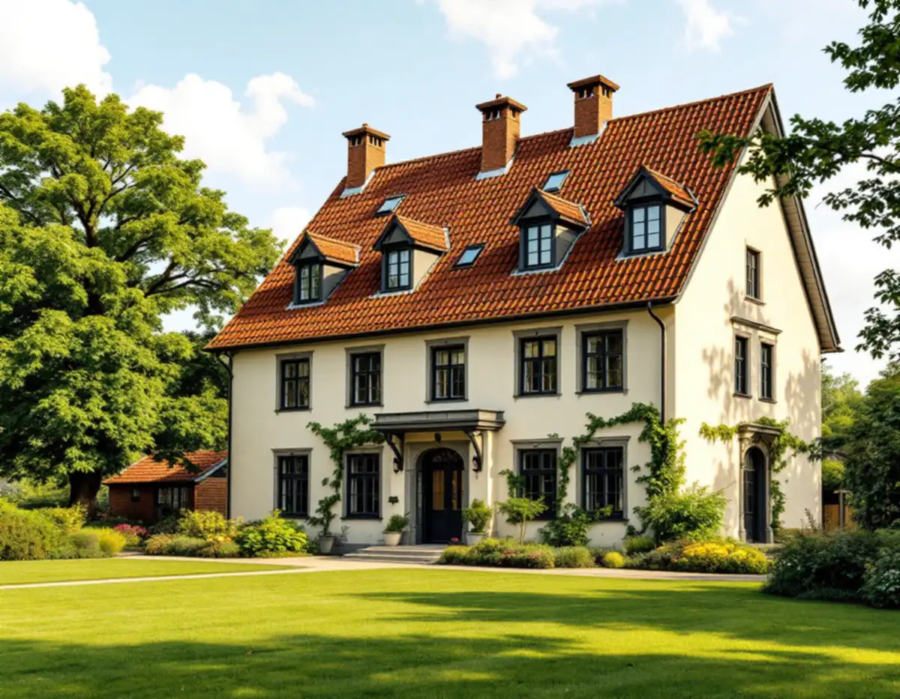
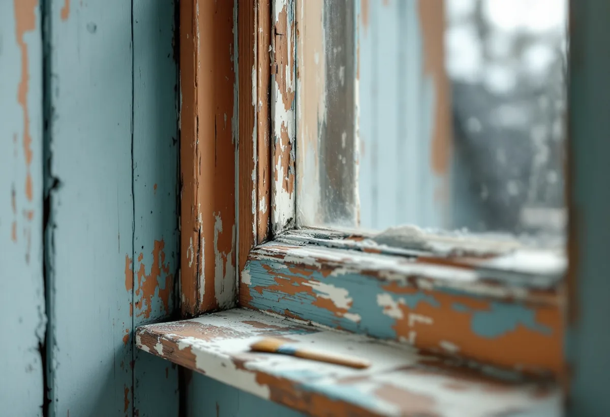

Platsbesök
Vi tittar på fasad, fönster och portar och gör skrapprov för att se vilka färglager och färgtyper som finns.
I Danderyd är det sällan kulören ensam som avgör hur ett hus ska målas om. Kommunens riktlinjer från 2024 säger för område efter område att tidstypisk färgsättning ska vara vägledande, och i villastäderna Djursholm och Stocksund gäller lovplikt för ommålning. Geal Entreprenad AB tar målningsuppdrag ute och inne i hela kommunen, med gratis platsbesök och skriftligt kostnadsförslag.

Miljö- och stadsbyggnadsnämnden antog i december 2024 riktlinjer för kulturhistoriska byggnader och miljöer i Danderyd. Dokumentet är en vägledning när kommunen prövar plan- och lovärenden, men det vänder sig också direkt till fastighetsägarna. Riktlinjerna går igenom 27 områden i Enebyberg, Danderyd, Djursholm och Stocksund, och i nästan alla står samma rad: tidstypisk färgsättning ska vara vägledande vid ommålning.
Det gäller inte bara sekelskiftesvillorna. Raden finns för egnahemmen i Enebyberg och Klingsta, för funktionalismen i Klingsta och Stocksund, för grupphusbebyggelsen i både Danderyd och Djursholm och för 1940- och 50-talshusen i Söderskogen. För området som kallas det moderna Danderyd lägger riktlinjerna till att fasaduttryck som inte hör till 1950- eller 1960-talets stilideal bör undvikas.
Ett radhus från 1970-talet kan alltså omfattas av samma resonemang som en villa från 1910. Skillnaden är vilken tid som är den tidstypiska – och det är det första en målare behöver ta reda på innan kulörer och färgtyp väljs.

På sin sida om de nya reglerna från 1 december 2025 skriver Danderyds kommun att ommålning, nytt tak och nya fönster inte kräver bygglov på ett en- eller tvåbostadshus. Ändringarna ska ändå göras varsamt och anpassas till byggnadens värden. Lov krävs alltid om fastigheten ligger i ett kulturhistoriskt särskilt värdefullt område eller om byggnaden själv är särskilt värdefull, och kommunen skriver att lovplikten alltid gäller inom riksintressen för kulturmiljövården. Djursholms och Stocksunds villastäder är riksintressen sedan 1987.
Boverket skiljer mellan att byta kulör och att måla om i samma kulör. Det senare räknas i regel som underhåll. Att byta färgtyp, till exempel från linoljefärg till en plastfärg, är inget kulörbyte, men det kan påverka husets yttre karaktärsdrag och därmed bli en del av prövningen i ett värdefullt område.
Är du osäker på om en ny kulör är förenlig med kraven kan du söka ett frivilligt bygglov. Kommunen nämner den möjligheten för de lovbefriade åtgärderna, och med ett beslut i handen vet du att färgsättningen håller.
Det bästa underlaget sitter ofta på huset. Under lister, bakom stuprör och i skyddade hörn kan äldre färglager finnas kvar som visar husets tidigare kulörer. Riksantikvarieämbetet rekommenderar dessutom att man vid varje renovering lämnar några små provytor obehandlade på undanskymda ställen och sparar uppgifter om vilka material som har använts. Det beskrivs som den bästa dokumentationen för nästa ommålning.
Myndigheten råder också till att skriva en tydlig arbetsbeskrivning när traditionella färgtyper ska användas, där bindemedel, pigment och behandlingsmetod anges. Annars finns en risk att utföranden med helt andra egenskaper betraktas som likvärdiga. För en villa i ett riksintresse är en sådan beskrivning dessutom ett bra underlag om kommunen vill se hur arbetet ska göras.
I grupphusområdena är frågan enklare men lika viktig. Riktlinjerna vill att områdenas enhetliga karaktär mot gatan behålls, och ett hus som får en egen kulör i en länga eller rad syns tydligt.
Riktlinjerna lyfter särskilt fram äldre fönster och dörrar. De beskrivs som byggnadsdelar med generellt högt kulturhistoriskt värde, ofta av hög kvalitet, som med fördel kan renoveras i stället för att bytas ut. I flera områden står det uttryckligen att fönster och portar i originalutförande ska värnas.
För målaren innebär det kittning, skrapning och målning av bågar, karmar och foder – ett arbete som tar tid men som riksantikvarieämbetets handbok beskriver som löpande underhåll. Fönster, vattbräder, trappor och räcken är hårt utsatta för väder, och väntar man för länge riskerar underlaget att skadas. Söderfasader behöver dessutom målas om oftare än norrfasader. Är fönstren för långt gångna finns mer om alternativen under fönsterbyte, och trasiga foder eller dörrblad kan lagas av en snickare innan de målas.
Riktlinjerna påminner om att du som fastighetsägare enligt plan- och bygglagen ska hålla byggnaderna i vårdat skick och underhålla dem så att utformning och tekniska egenskaper i huvudsak bevaras. Regelbunden målning är en stor del av det underhållet.
Trädgården räknas också in i kulturmiljön. Riktlinjerna nämner äldre träd, fruktträd, staket, murar och grusade gångar som värden att ta hänsyn till. Därför planeras ställning, avtäckning och uppställning vid platsbesöket, så att rabatter, häckar och gamla träd klarar sig medan fasaden målas.
Vi tittar på fasad, fönster och portar och gör skrapprov för att se vilka färglager och färgtyper som finns.
Vi stämmer av kulturmiljökartan och vad riktlinjerna säger om området, och om ny kulör kräver lov.
Färgtyp, kulör, underarbete och antal strykningar skrivs ut, så att förslaget kan användas som underlag.
Tvätt, skrapning, lagning av trä och kittning av fönster. Provytor lämnas på undanskymda ställen.
Strykningarna görs i lämpligt väder och med de torktider färgtypen kräver.
Vi går igenom resultatet tillsammans och noterar vilka material som använts.
Skatteverket räknar målning av fasader, fönster, väggar, tak och golv samt tapetsering som rotarbete i ett småhus. Att måla staket och murar ger inget avdrag, och färg räknas som material. Avdraget är 30 procent av arbetskostnaden, högst 50 000 kr per person och år, och tillsammans med rutavdrag högst 75 000 kr.
Bor ni två ägare i villan kan ni båda göra avdrag för er del av arbetet. Geal drar avdraget direkt på fakturan.
På Danderyds äldre villor väger fönster, portar och snickerier tyngst, tillsammans med husets höjd och hur mycket gammal färg som måste bort. Traditionella färgtyper kan kräva fler och tunnare strykningar. På grupphus och radhus är det oftare panelens skick och mängden skrapning som styr. Platsbesöket är gratis och du får ett skriftligt kostnadsförslag.
Fasad, fönster och invändig målning.
Målare i Stockholm →Takbyte, takbesiktning och plåtarbeten.
Takläggare i Danderyd →Djursholm, Stocksund och Enebyberg.
Takrenovering i Danderyd →